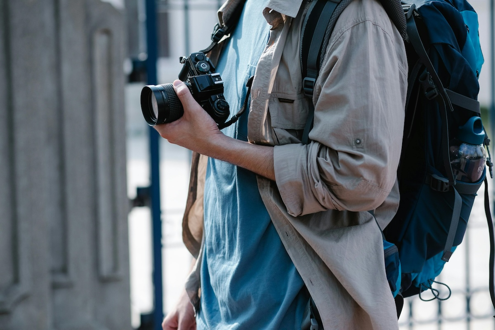

Seyahat Fotoğraflarınıza Ruh Katacak İpuçları
Seyahat fotoğrafçılığı, gezip gördüklerinizi ölümsüzleştirmenin ve anılarınızı canlı tutmanın en güzel yollarından biridir. Ancak, bir fotoğrafı unutulmaz kılan unsurları bilmek, karelerinize fark katmanızı sağlayabilir. İşte tatilde fotoğraf çekerken işinize yarayacak bazı tüyolar:
1. Işığı Doğru Kullanmaya Özen Gösterin
Işık, fotoğrafçılığın en temel unsurlarından biridir. Seyahat fotoğrafçılığında en iyi sonucu almak için altın saatleri (güneşin doğduğu ve battığı saatler) tercih edin. Bu saatlerde oluşan yumuşak ve sıcak tonlar, fotoğrafınıza derinlik ve duygu katacaktır.
Öğle saatlerinde sert güneş ışığından kaçınmak için gölgeleri ve reflektörleri kullanabilirsiniz. Özellikle su yüzeyleri, camlar veya parlak yüzeyler ışığı yansıtarak fotoğraflarınıza ilginç efektler ekleyebilir.
Bulutlu havalar da dramatik etkiler yaratabilir. Gökyüzündeki bulutların hareketini uzun pozlama teknikleriyle yakalayarak farklı bir atmosfer oluşturabilirsiniz. Gece çekimleri içinse yapay ışık kaynaklarını doğru şekilde kullanarak etkileyici kareler oluşturabilirsiniz.
2. Kompozisyona Dikkat Edin
Fotoğraf kompozisyonu, karelerinizin güzelliğini ve etkisini artırır.
- 1/3 Kuralı: Çerçeveyi yatay ve dikey olarak üçe bölüp ana nesnenizi bu çizgilerin kesiştiği noktalara yerleştirin.
- Ön Plan Kullanımı: Fotoğrafa derinlik katmak için ön planda ilgiyi çekecek objeler kullanabilirsiniz. Örneğin, sahil fotoğraflarında bir kayık veya ayakkabılarınız gibi detaylar ekleyerek karelerinize daha fazla hikaye katabilirsiniz.
- Doğal Çerçeveler: Kapılar, pencereler veya ağaç dalları gibi doğal unsurları kullanarak etkileyici bir kompozisyon yaratabilirsiniz.
- Denge ve Simetri: Aynalar, su birikintileri ve yansımalar kullanarak simetrik kompozisyonlar oluşturabilirsiniz.
3. Yerel Halkla İletişim Kurun
Bir yerin ruhunu yansıtmanın en iyi yollarından biri, orada yaşayan insanlarla iletişime geçmek ve onların hikayelerini görselleştirmektir. Samimi bir gülücük veya kısa bir sohbet, portre fotoğraflarınıza daha derin anlam katabilir. Fotoğraf çekmeden önce izin istemek, hem saygılı bir yaklaşım olacaktır hem de doğal ve rahat pozlar yakalamanıza yardımcı olacaktır.
Portre çekimlerinde doğal ışık kaynaklarını kullanarak daha yumuşak gölgeler ve daha etkileyici yüz ifadeleri elde edebilirsiniz. İnsanların günlük yaşantılarını çekerken, onların farkında olmadan doğal hallerini yakalamaya çalışmak daha samimi görüntüler oluşturabilir.
4. En İyi Saatlerde Çekim Yapın
Altın saatlerin haricinde, gece ve mavi saat (güneşin batımından hemen sonra) de büyüleyici kareler yakalamanıza olanak tanır.
- Uzun pozlama teknikleri kullanarak gece hareket eden insanları ve araçları flu hale getirebilir, dramatik bir atmosfer yaratabilirsiniz.
- Gece fotoğrafçılığı için tripod kullanarak daha net ve titreşimsiz görüntüler elde edebilirsiniz.
- Yapay ışık kaynaklarını değerlendirin: Şehir ışıkları, neon tabelalar veya mum ışıkları gibi unsurları kullanarak farklı ışık oyunları yaratabilirsiniz.
- Yıldız pozlamaları deneyin: Eğer karanlık bir bölgede bulunuyorsanız, yıldızların hareketini uzun pozlama tekniğiyle yakalayabilirsiniz.
5. Hikaye Anlatımına Odaklanın
Seyahat fotoğrafçılığı sadece güzel kareler yakalamaktan ibaret değildir; aynı zamanda bir hikaye anlatma sanatıdır.
- Çektiğiniz her fotoğrafın bir anlamı olmasına özen gösterin.
- Aynı mekanda farklı açılardan ve detaylardan kareler yakalayarak o ortamın atmosferini daha iyi yansıtabilirsiniz.
- Seri fotoğraflar çekin: Bir olayın başından sonuna kadar farklı aşamalarını yakalayarak hikaye anlatımınızı güçlendirebilirsiniz.
- Duyguları yansıtın: İnsanların jest ve mimiklerini, sokaktaki spontane anları yakalayarak daha duygusal kareler oluşturabilirsiniz.
6. Doğal ve Spontane Anları Yakalayın
Planlanmış fotoğraf kareleri her zaman en etkileyici olanlar değildir. Seyahat sırasında karşılaştığınız beklenmedik anlar genellikle en unutulmaz fotoğrafları sunar.
- Gözlem yeteneğinizi geliştirin: İnsanların günlük hayatına dikkat edin ve doğal anları kaçırmamaya çalışın.
- Hareketli anları dondurun: Şehirde bir bisikletli, bir pazarda çalışan bir satıcı veya dalgalara atlayan bir çocuk gibi anları yakalamak için yüksek enstantane hızlarını kullanabilirsiniz.
- Çocukları ve hayvanları fotoğraflayın: Onların enerjisi ve doğal halleri, fotoğraflara eğlenceli ve samimi bir hava katabilir.
Seyahat fotoğrafçılığında başarılı olmak için teknik bilgilere sahip olmak kadar, gözlem yeteneğinizi geliştirmek de önemlidir. Her yeni seyahat, farklı bir hikaye ve deneyim sunar. Bu nedenle, fotoğraf makinenizi veya telefonunuzu hazır tutarak, seyahat anılarınızı unutulmaz karelerle ölümsüzleştirin!